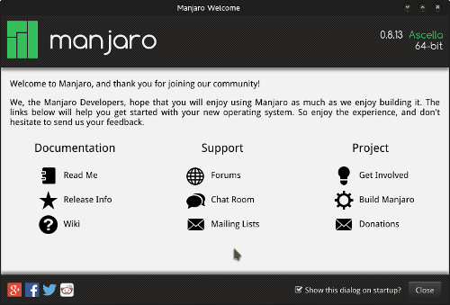
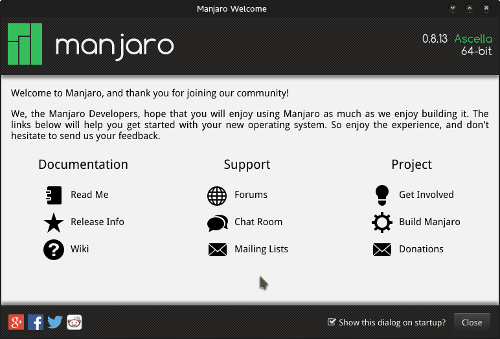

Manjaro Linux
Gestern ist es geschehen: Ich bin nach vielen Jahren von gentoo zu manjaro Linux gewechselt.
Derzeit bin ich noch dabei, mich im System zurechtzufinden. Bin gespannt, wie ich damit zurecht komme.
Gestern ist es geschehen: Ich bin nach vielen Jahren von gentoo zu manjaro Linux gewechselt.
Derzeit bin ich noch dabei, mich im System zurechtzufinden. Bin gespannt, wie ich damit zurecht komme.
